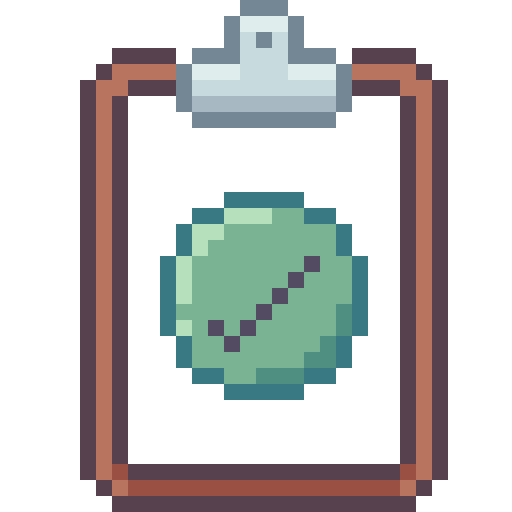
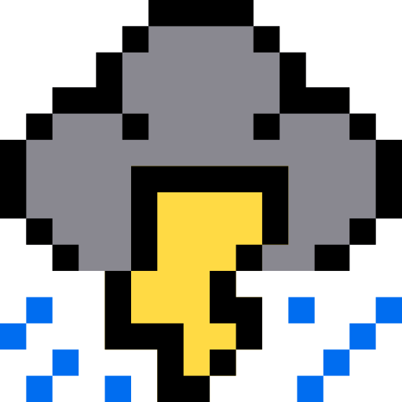
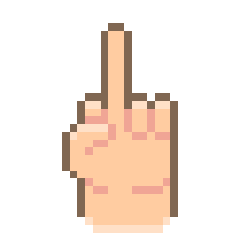
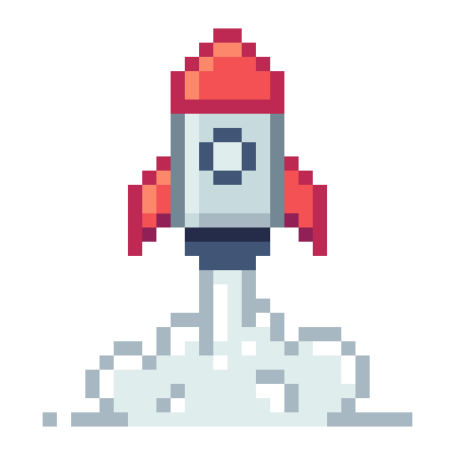
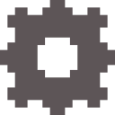

<section class="main">
  <section class="notepads-area">
    <retro-datepicker></retro-datepicker>

    <div class="notepads-area__grid --flex-centralized">
      <div
        class="notepads-area__grid__dragable"
        [ngStyle]="{'background-color': mainColor}"
      >
        <div
          class="notepads-area__grid__dragable__item"
          name="postit"
          [ngStyle]="{'background-color': mainColor}"
          *ngFor="let task of tasks"
          cdkDragBoundary=".notepads-area__grid__dragable"
          cdkDrag
        >
          <p>{{task.title}}</p>
          <div
            class="notepads-area__grid__dragable__item__complete --flex"
            *ngIf="task.isComplete"
          >
            
          </div>
        </div>
      </div>
    </div>
  </section>

  <section class="notepad-cute-area --flex">
    <div class="notepad-cute-area__feelings --flex-centralized">
      <span>Defina seu dia</span>
      <div class="notepad-cute-area__feelings__emojis">
        <a></a>
        <a></a>
        <a></a>
        <a></a>
        <a></a>
        <a></a>
        <a></a>
        <a></a>
      </div>
      <div class="notepad-cute-area__btns-area --flex-centralized">
        <button
          id="btn"
          class="--flex-centralized"
        ><p>Minhas vendas</p></button>

        <div class="notepad-cute-area__btns-area__configs-grid --flex-centralized">
          <a class="--flex-centralized">nota+</a>
          <a class="--flex-centralized" (click)="openSettingsModal()">config</a>
          <a class="--flex-centralized">delete</a>
        </div>
      </div>
    </div>

    <div class="notepad-cute-area__moon-gif --flex-centralized">
      <p>the moon today is:</p>
      <div class="notepad-cute-area__moon-gif__moldure --flex">
        
      </div>
    </div>
  </section>
</section>
